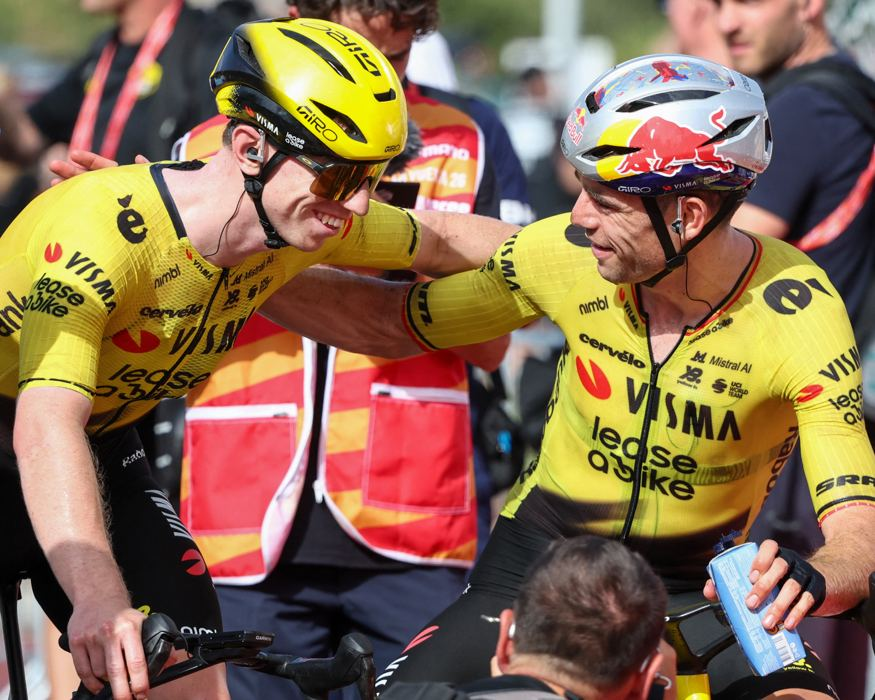
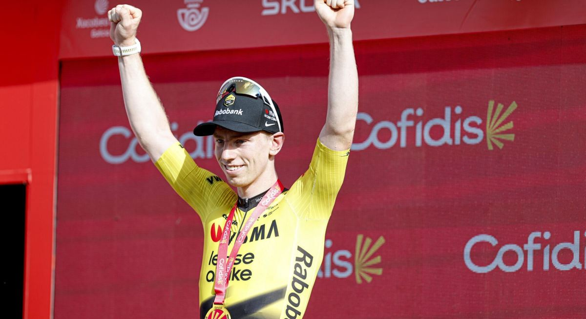

Falset → Roquetes, 173.3 km
27 Aug 2026
Hilly. One Cat. 3, Puerto de Paüls. Sprint of a reduced bunch after Visma’s lead-out (van Aert → Laporte → Brennan). Winner Matthew Brennan (Visma) 3:47:02. Meeus, Albanese, Romele, Laurance all same time. Aular relegated from 6th to 89th.
Open the piece

Jerseys after stage 5
27 Aug 2026
Red: Pogačar 11:26:01, Roglič +3:21, Mas +3:32, Kuss +3:44, Onley +3:45. Green and polka still Pogačar. White: Onley. Uijtdebroeks DNS (ankle). Van Sintmaartensdijk DNF.
Tale of the tape
Visma ran a closed shop on the first full Spanish day. Crosswinds swallowed the break with 99 km left, UAE’s tempo on Paüls spat Pedersen and Groves, then van Aert and Laporte delivered and 21-year-old Brennan did the rest — two sprints, two wins, Grand Tour debut.
Nothing moved on GC. Pogačar still owned red, green and polka, 3:21 on Roglič. Two plots: the Slovenian already a class apart, and Brennan the breakout stage-winner of the week.